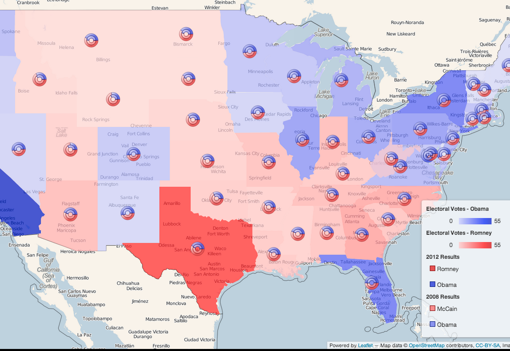
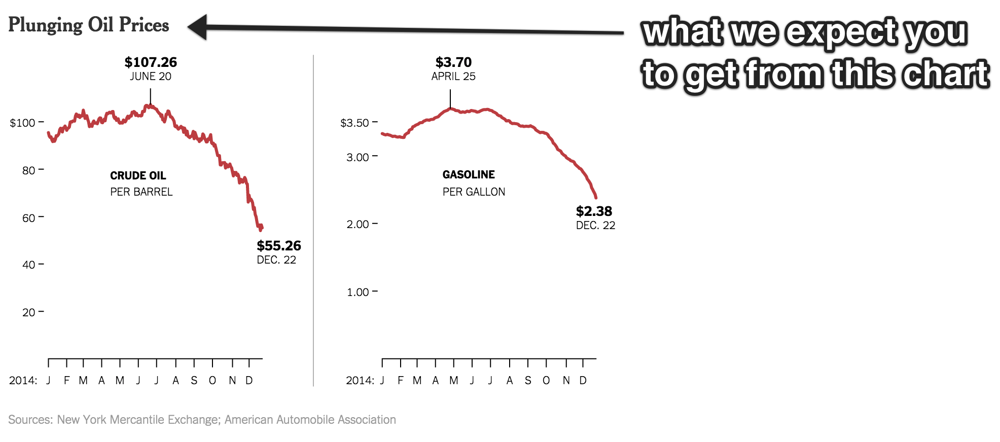
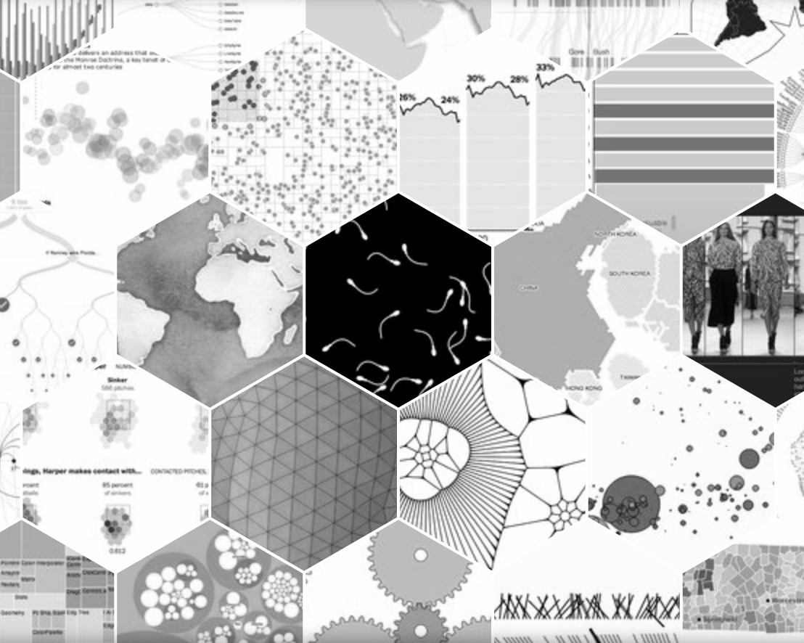

Tom MacWright
tmcw
a few things i have learned about charts and maps

people

nothing

gunshots

people

runs

keystrokes
/
pretty charts are all about
1) spending dimensions wisely
2) banning pitfalls
3) art school basics
/
spending dimensions wisely
the best thing you can read about visualization is Semiology of Graphics by Jacques Bertin
Bertin defines charts.
d3, ggplot, matplotlib are all derived from this book
visual encoding of data in terms of dimensions
Dimensions: X, Y, order, color, pattern, symbol
bar charts: x=category, y=value
choropleth map: order=region, color=value
You get 3
If you run out, use small multiples: multiple charts
that represent each category or time period.
/
banning pitfalls

rainbow color schemes

pie charts
chartmaps
| before |
after |
| rainbows |
colorbrewer
single-color ramps |
| pies |
bars |
| chart maps |
small multiples |
/
art school basics
1
write what you're trying to do

not what the chart is of, but the desired conclusion
2
when in doubt, work in greyscale

3
get peer-reviews
if not friends, then stats.stackexchange.com
or edwardtufte.com/bboard
fin